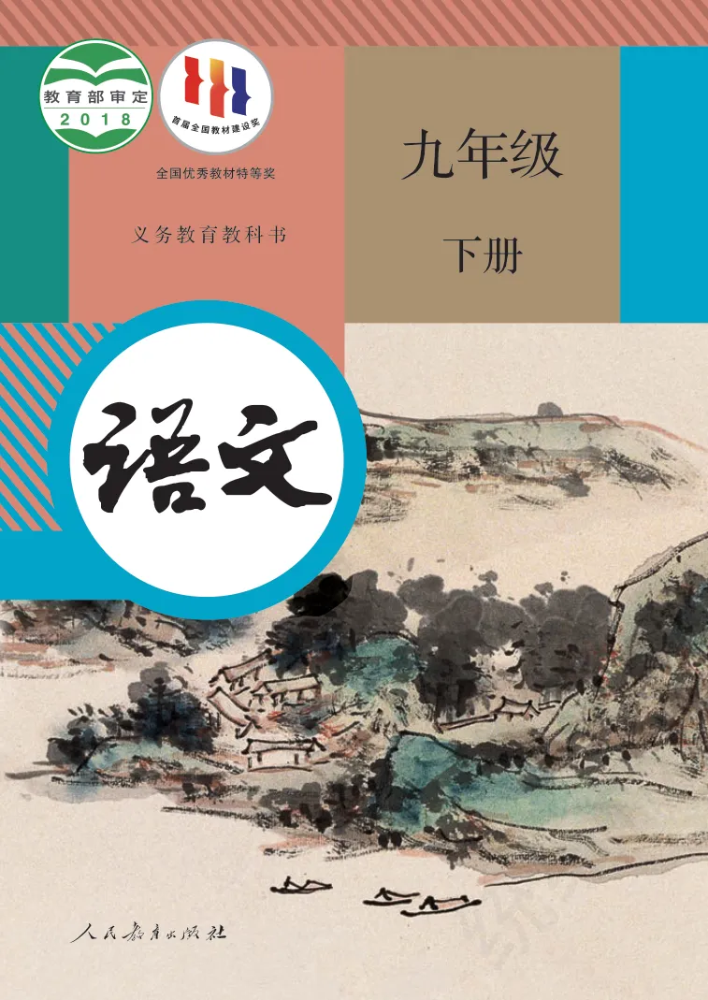
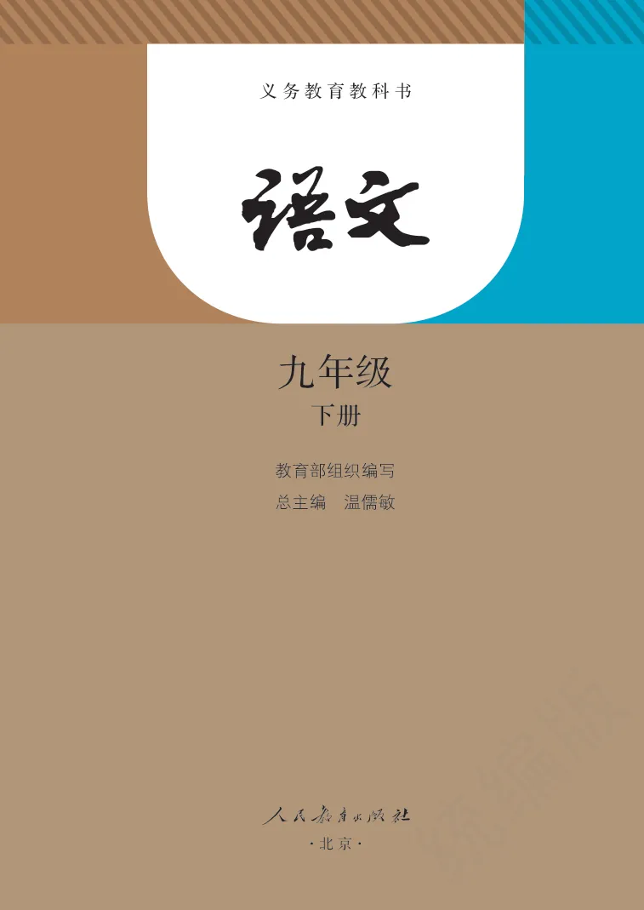
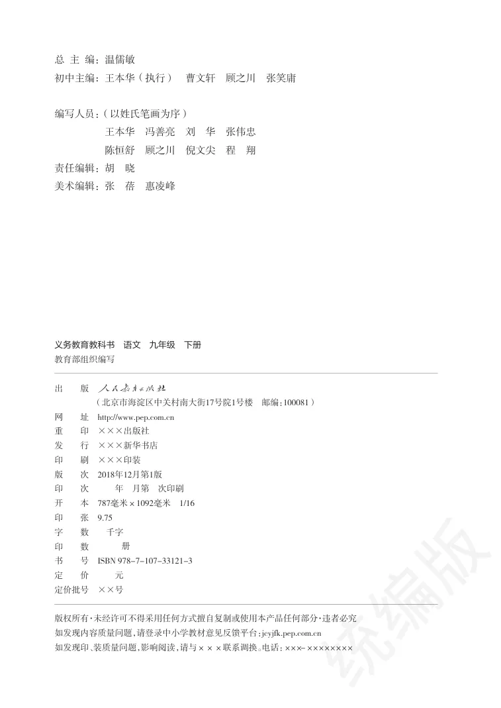
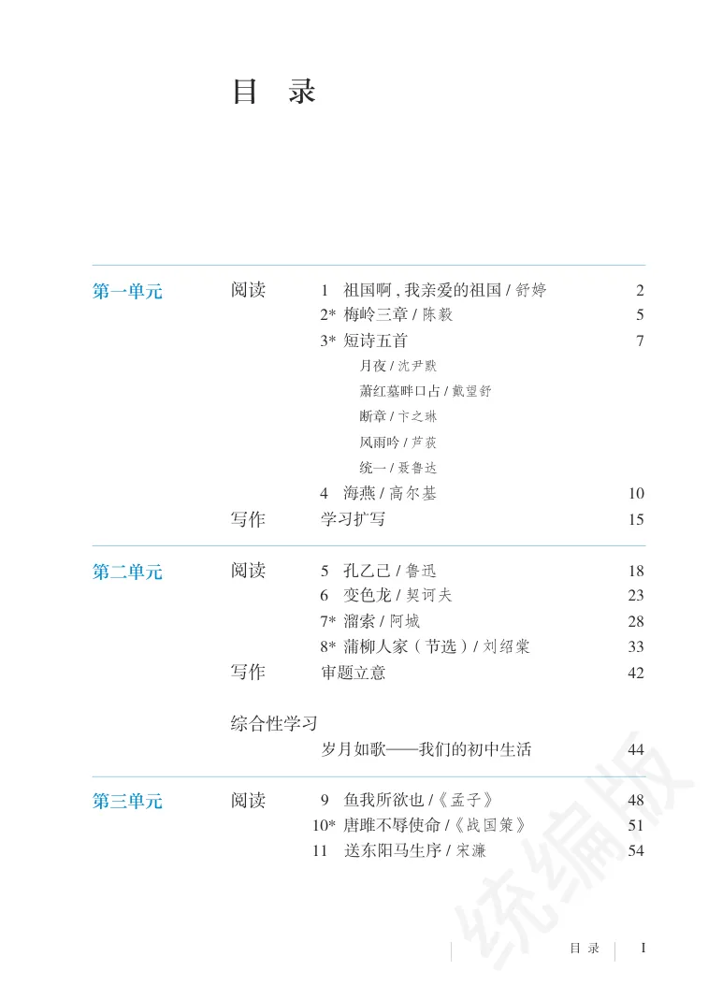
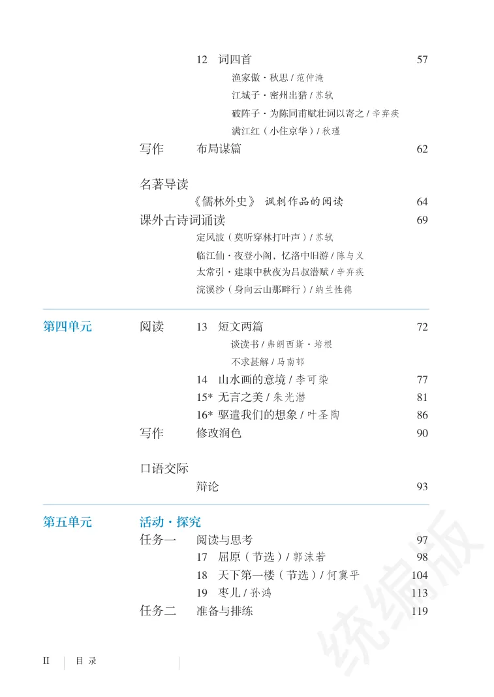
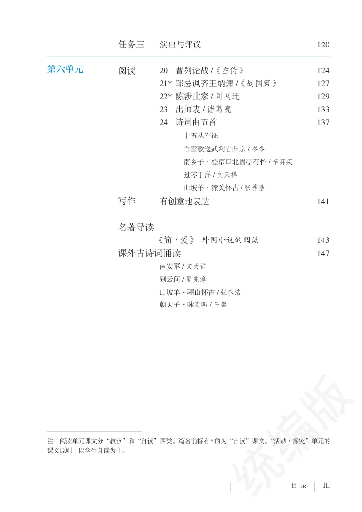
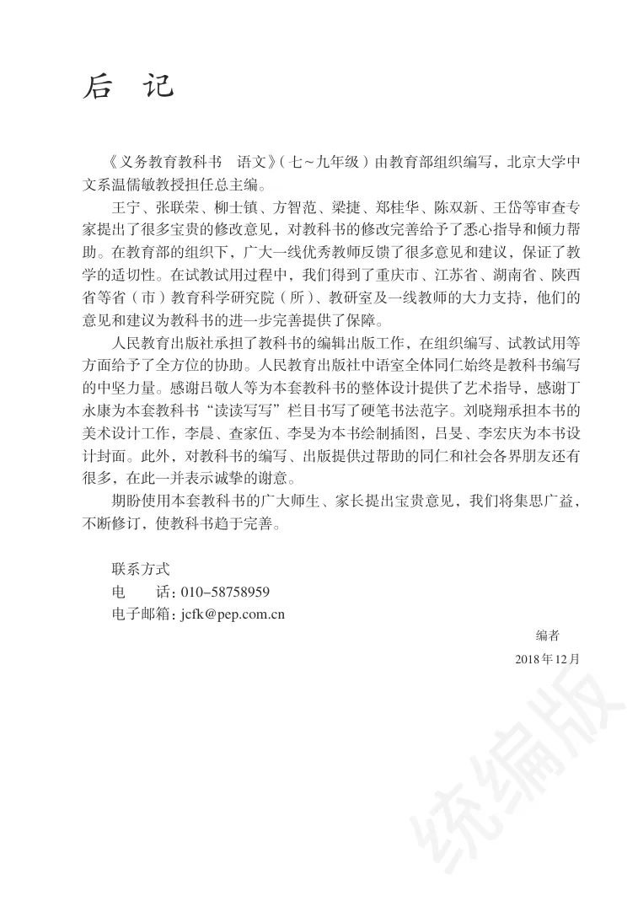
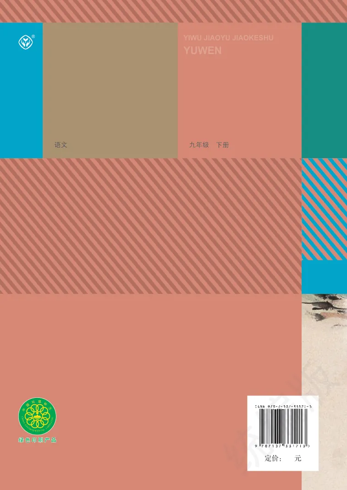

PDF 第 1 页PDF 第 1 页
九年级
全国优秀教材特等奖
义务教育教科书
APPENDIX
封面、版权、目录、后记与封底。
PDF 第 1–7 页
全国优秀教材特等奖
义务教育教科书
义务教育教科书
教育部组织编写总主编 温儒敏
总 主 编：温儒敏
初中主编：王本华（执行） 曹文轩 顾之川 张笑庸
编写人员：（以姓氏笔画为序）王本华 冯善亮 刘 华 张伟忠陈恒舒 顾之川 倪文尖 程 翔
责任编辑：胡 晓美术编辑：张 蓓 惠凌峰
义务教育教科书 语文 九年级 下册
教育部组织编写
出 版
（北京市海淀区中关村南大街17号院1号楼 邮编：100081）
网 址 http://www.pep.com.cn重 印 ×××出版社发 行 ×××新华书店印 刷 ×××印装版 次 2018年12月第1版印 次 年 月第 次印刷开 本 787毫米×1092毫米 1/16
印 张 9.75字 数 千字印 数 册书 号 ISBN 978-7-107-33121-3定 价 元定价批号 ××号
版权所有·未经许可不得采用任何方式擅自复制或使用本产品任何部分·违者必究如发现内容质量问题，请登录中小学教材意见反馈平台：jcyjfk.pep.com.cn如发现印、装质量问题，影响阅读，请与×××联系调换。电话：×××-××××××××
阅读1 祖国啊, 我亲爱的祖国/ 舒婷2
第一单元
2* 梅岭三章/ 陈毅5 3* 短诗五首7
月夜/ 沈尹默萧红墓畔口占/ 戴望舒断章/ 卞之琳风雨吟/ 芦荻统一/ 聂鲁达
4 海燕/ 高尔基10写作学习扩写15
阅读5 孔乙己/ 鲁迅18
第二单元
6 变色龙/ 契诃夫23 7* 溜索/ 阿城28 8* 蒲柳人家（节选）/ 刘绍棠33写作审题立意42
综合性学习岁月如歌——我们的初中生活44
阅读9 鱼我所欲也/《孟子》48
第三单元
10* 唐雎不辱使命/《战国策》51 11 送东阳马生序/ 宋濂54
12 词四首57
渔家傲·秋思/ 范仲淹江城子·密州出猎/ 苏轼破阵子·为陈同甫赋壮词以寄之/ 辛弃疾满江红（小住京华）/ 秋瑾
写作布局谋篇62
名著导读《儒林外史》 讽刺作品的阅读64课外古诗词诵读69定风波（莫听穿林打叶声）/ 苏轼临江仙·夜登小阁，忆洛中旧游/ 陈与义太常引·建康中秋夜为吕叔潜赋/ 辛弃疾浣溪沙（身向云山那畔行）/ 纳兰性德
第四单元
阅读13 短文两篇72谈读书/ 弗朗西斯·培根
不求甚解/ 马南邨
14 山水画的意境/ 李可染77 15* 无言之美/ 朱光潜81 16* 驱遣我们的想象/ 叶圣陶86写作修改润色90
口语交际辩论93
第五单元
活动·探究任务一阅读与思考97 17 屈原（节选）/ 郭沫若98 18 天下第一楼（节选）/ 何冀平104 19 枣儿/ 孙鸿113任务二准备与排练119
任务三演出与评议120
第六单元
阅读20 曹刿论战/《左传》124 21* 邹忌讽齐王纳谏/《战国策》127 22* 陈涉世家/ 司马迁129 23 出师表/ 诸葛亮133 24 诗词曲五首137
十五从军征白雪歌送武判官归京/ 岑参南乡子·登京口北固亭有怀/ 辛弃疾过零丁洋/ 文天祥山坡羊·潼关怀古/ 张养浩
写作有创意地表达141
名著导读《简·爱》 外国小说的阅读143课外古诗词诵读147南安军/ 文天祥
别云间/ 夏完淳山坡羊·骊山怀古/ 张养浩朝天子·咏喇叭/ 王磐
注：阅读单元课文分“教读”和“自读”两类。篇名前标有*的为“自读”课文。“活动·探究”单元的
课文原则上以学生自读为主。
本页没有可可靠提取的正文文字，请查看下方原书页面。
PDF 第 156 页
《义务教育教科书 语文》（七~九年级）由教育部组织编写，北京大学中
文系温儒敏教授担任总主编。
王宁、张联荣、柳士镇、方智范、梁捷、郑桂华、陈双新、王岱等审查专家提出了很多宝贵的修改意见，对教科书的修改完善给予了悉心指导和倾力帮助。在教育部的组织下，广大一线优秀教师反馈了很多意见和建议，保证了教学的适切性。在试教试用过程中，我们得到了重庆市、江苏省、湖南省、陕西省等省（市）教育科学研究院（所）、教研室及一线教师的大力支持，他们的
意见和建议为教科书的进一步完善提供了保障。
人民教育出版社承担了教科书的编辑出版工作，在组织编写、试教试用等方面给予了全方位的协助。人民教育出版社中语室全体同仁始终是教科书编写的中坚力量。感谢吕敬人等为本套教科书的整体设计提供了艺术指导，感谢丁永康为本套教科书“读读写写”栏目书写了硬笔书法范字。刘晓翔承担本书的美术设计工作，李晨、查家伍、李旻为本书绘制插图，吕旻、李宏庆为本书设计封面。此外，对教科书的编写、出版提供过帮助的同仁和社会各界朋友还有
很多，在此一并表示诚挚的谢意。
期盼使用本套教科书的广大师生、家长提出宝贵意见，我们将集思广益，
不断修订，使教科书趋于完善。
联系方式
电 话：010-58758959电子邮箱：jcfk@pep.com.cn
编者2018年12月
PDF 第 157–158 页
本页没有可可靠提取的正文文字，请查看下方原书页面。
®
YIWU JIAOYU JIAOKESHU
九年级 下册语文
绿色印刷产品绿色印刷产品
原版对照
全部页面按课文和栏目分组，点击可查看原尺寸图片。








